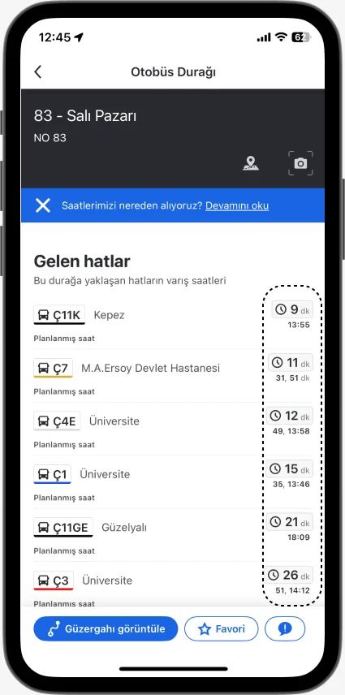
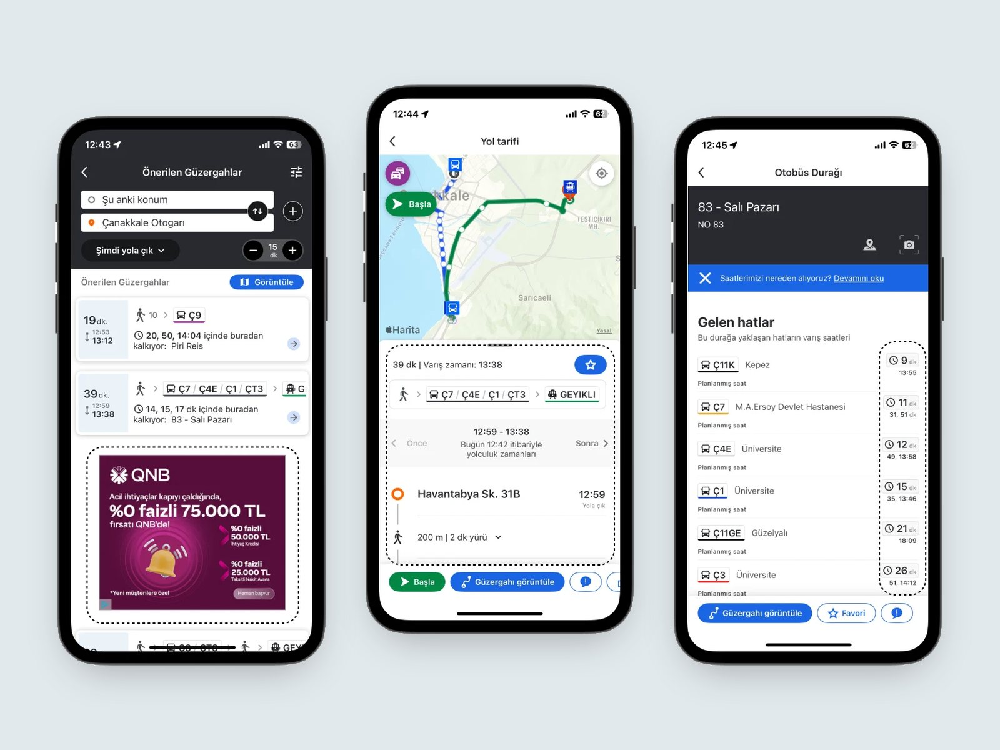
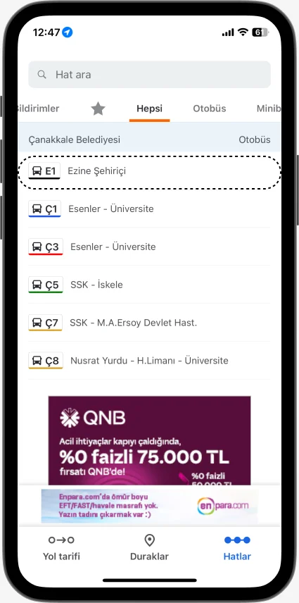
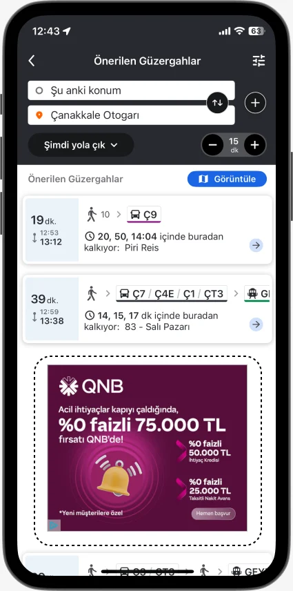

Make schedules trustworthy
Outdated times drive churn. Validate data with municipalities and real-time rider feedback.
Case study 03 · December 2024 · UX research
A UX research study on why public-transit riders lose trust in Moovit, and what would win them back.


Outdated times drive churn. Validate data with municipalities and real-time rider feedback.

Explicit vehicle labels, icons and colour-coding lower the learning curve for new users.

Move ads away from navigation and offer an ad-free tier with student pricing.
Ambiguous transit labels, a convoluted flow and inaccurate schedules create a steep learning curve and erode trust.
New riders couldn’t tell a minibus from a bus. Clear labels and reliable data drive retention more than new features.
Validated schedule data, clearer IA with explicit labels, icons and colour, and less intrusive ads with a student premium tier.
37 reviews from App Store, Google Play, Ekşi Sözlük and Şikayetvar.
5 active users, 45-minute remote 1:1 sessions.
Affinity map of pain points, expectations and motivations.
Feature comparison with Google Maps and Citymapper.
Scroll inside the frame to read the full document.